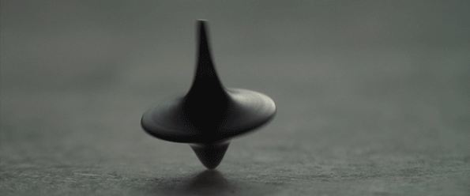
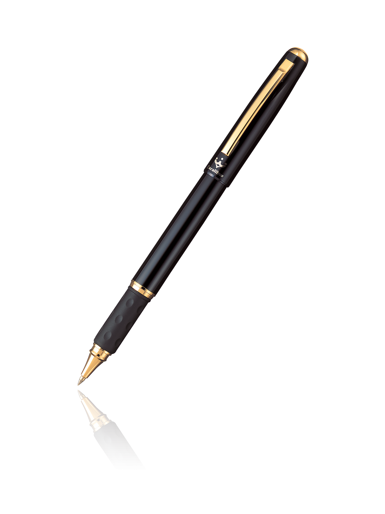
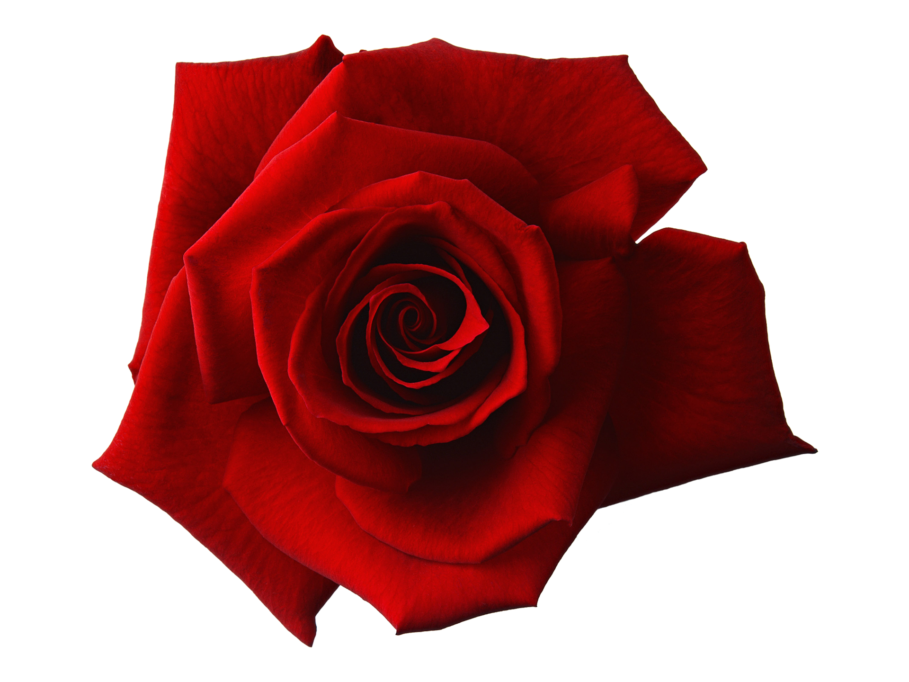
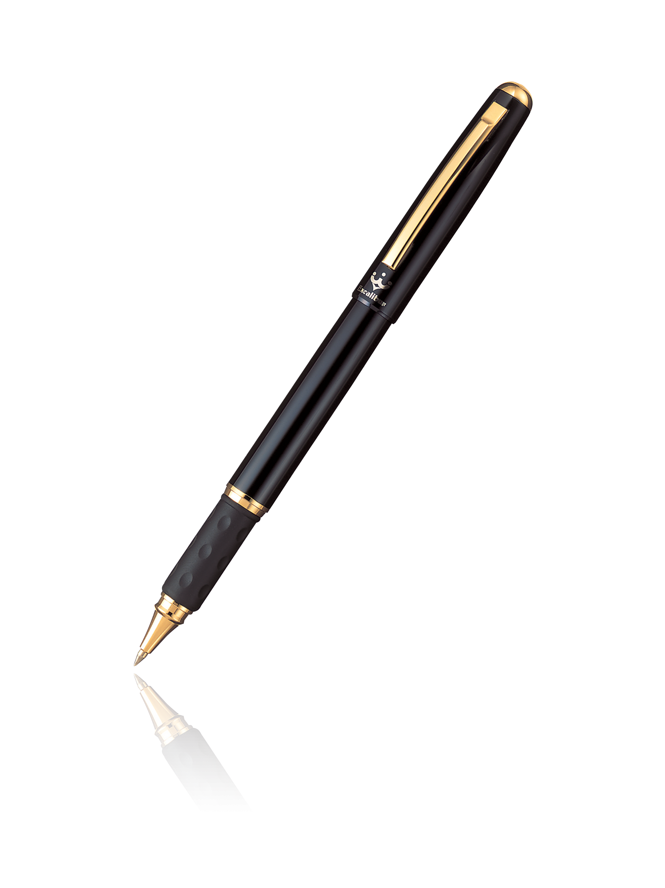
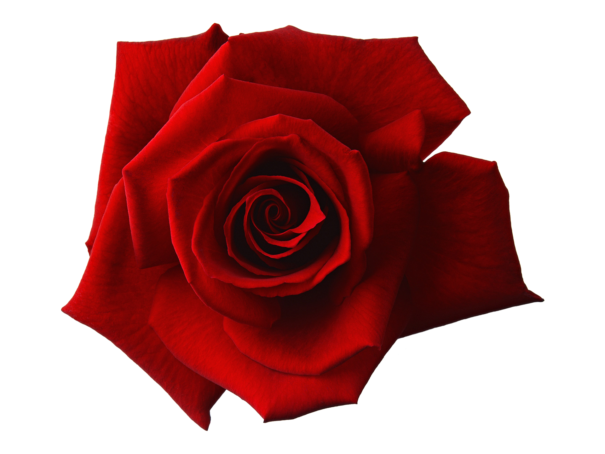

자각몽에 대해서
오세요, 우리는 언젠가 만난 적이 있어요. 시를 쓰는 여자여, 우리는 식탁에 앉아서 정치와 취향과 여름에 대해 이야기해요. 예의 바르고 말쑥한 손님의 자세로 당신은 물고기와 파란 정향의 냄새를 좋아하고 꼬리가 긴 바람도 좋아하지요.
나의 손님이여, 나는 당신의 존재를 덥석 베어 물고 싶군요. 뜨거운 혀로 당신의 표면을 어루만지고, 날카로운 이빨로 차가운 뼈와 뼛속에 감춘 권태의 쓴맛을 찢어발기고, 금박 씌운 둔중한 어금니를 동원하여 당신의 경악을 꼼꼼히 저작할 것입니다.
나는 생각해요. 흰 침을 뚝뚝 흘리는 입술, 검은 목구멍 속을 당신의 잔해를 꿀꺽 삼킨 혀가 자신의 유일한 임무를 마치고 어떤 흐느낌 속으로 돌아가는 순간을, 그곳의 어둡고 창백한 고요를, 언젠가 목구멍으로 툭 튀어나올 딱딱한 손가락을
그러나 시를 쓰는 여자여, 영원한 손님이여. 당신의 검은 심장은 곧 찢어지겠군요. 물고기와 정향을 좋아하는 당신, 새하얀 육체와 충만한 영혼을 가진 당신, 언제까지나 다정하고 따뜻하고 겸손한 당신, 어쩌면 아름다운 당신 그러나 곧 나에게 먹힐 당신,오세요, 우리는 언젠가 만난 적이 있어요. 시를 쓰는 여자여, 우리는 식탁에 앉아서 정치와 취향과 여름에 대해 이야기해요. 예의 바르고 말쑥한 손님의 자세로 당신은 물고기와 파란 정향의 냄새를 좋아하고 꼬리가 긴 바람도 좋아하지요.
나의 손님이여, 나는 당신의 존재를 덥석 베어 물고 싶군요. 뜨거운 혀로 당신의 표면을 어루만지고, 날카로운 이빨로 차가운 뼈와 뼛속에 감춘 권태의 쓴맛을 찢어발기고, 금박 씌운 둔중한 어금니를 동원하여 당신의 경악을 꼼꼼히 저작할 것입니다.
나는 생각해요. 흰 침을 뚝뚝 흘리는 입술, 검은 목구멍 속을 당신의 잔해를 꿀꺽 삼킨 혀가 자신의 유일한 임무를 마치고 어떤 흐느낌 속으로 돌아가는 순간을, 그곳의 어둡고 창백한 고요를, 언젠가 목구멍으로 툭 튀어나올 딱딱한 손가락을
그러나 시를 쓰는 여자여, 영원한 손님이여. 당신의 검은 심장은 곧 찢어지겠군요. 물고기와 정향을 좋아하는 당신, 새하얀 육체와 충만한 영혼을 가진 당신, 언제까지나 다정하고 따뜻하고 겸손한 당신, 어쩌면 아름다운 당신 그러나 곧 나에게 먹힐 당신,오세요, 우리는 언젠가 만난 적이 있어요. 시를 쓰는 여자여, 우리는 식탁에 앉아서 정치와 취향과 여름에 대해 이야기해요. 예의 바르고 말쑥한 손님의 자세로 당신은 물고기와 파란 정향의 냄새를 좋아하고 꼬리가 긴 바람도 좋아하지요.
나의 손님이여, 나는 당신의 존재를 덥석 베어 물고 싶군요. 뜨거운 혀로 당신의 표면을 어루만지고, 날카로운 이빨로 차가운 뼈와 뼛속에 감춘 권태의 쓴맛을 찢어발기고, 금박 씌운 둔중한 어금니를 동원하여 당신의 경악을 꼼꼼히 저작할 것입니다.
나는 생각해요. 흰 침을 뚝뚝 흘리는 입술, 검은 목구멍 속을 당신의 잔해를 꿀꺽 삼킨 혀가 자신의 유일한 임무를 마치고 어떤 흐느낌 속으로 돌아가는 순간을, 그곳의 어둡고 창백한 고요를, 언젠가 목구멍으로 툭 튀어나올 딱딱한 손가락을
그러나 시를 쓰는 여자여, 영원한 손님이여. 당신의 검은 심장은 곧 찢어지겠군요. 물고기와 정향을 좋아하는 당신, 새하얀 육체와 충만한 영혼을 가진 당신, 언제까지나 다정하고 따뜻하고 겸손한 당신, 어쩌면 아름다운 당신 그러나 곧 나에게 먹힐 당신,

∨ SCROLL
 



자각몽(自覺夢) 또는 루시드 드림(영어: lucid dream)은
꿈을 꾸는 도중에 스스로 꿈이라는 사실을 알고 꾸는
꿈을 말한다.
꿈을 꾸는 도중에 스스로 꿈이라는 사실을 알고 꾸는
꿈을 말한다.
Page #4
Page #5